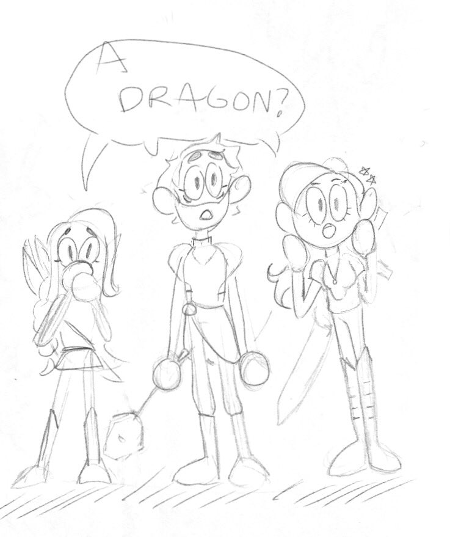
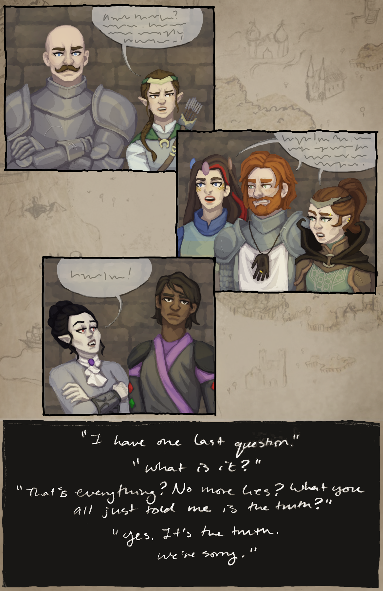
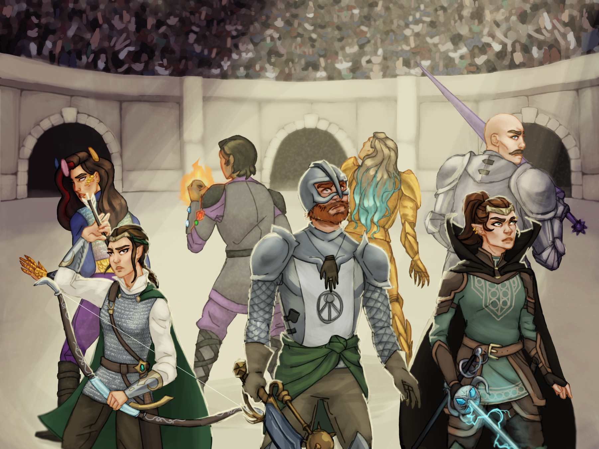
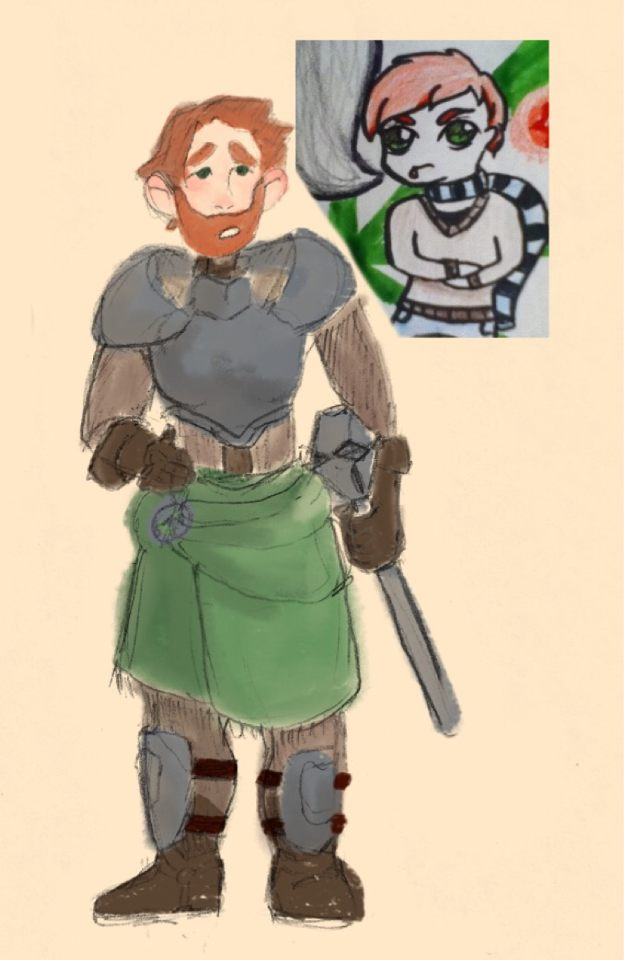

Canon and Canon-adjacent Art
This is a LOT of content, so I'll divide it up into searchable categories as best I can. Most of the content will be organized according to the in-game timeline.Categories:
- Maps- Comics and Timeline-Related
- Characters and Concepts
- Tarot Collection
Maps
This campaign began here:
But all of the story takes place here:
Comics and Timeline-Related
Road Music - Rae
Larawyn after breaking two rapiers on a mimic - Moira
Pirate ship boss battle comic - Henry


Allie defends Percy - Moira
Wood elf village campfire comic - Rae
The riddle (comic) - Moira

HERE COMES THE GIANT FIST (Anaxir, Tink, Allie) edit - Jacob

Tink boss battle comic (aka: severe emotional trauma) - Rae

Defeating Wendy and meeting Adrasteia - Henry

Allie's conscience informing him how to justify going into the temple - Moira

Explaining where we're from to Adrasteia comic - Moira

A comic of the longest carriage ride ever - Henry
Meeting Patrick - Henry

Negotiations with the Flying Dutchman - Henry

Allie heals Anaxir after the fight with Karen comic - Moira

The team meets Ur-Morg mini comic - Moira

Running past awful mushrooms - Moira

Patrick and Milo - Henry
Atlantis battle concept - Henry
Larawyn and Theodosia meet Olidammara - Rae
Adrasteia and Larawyn training (from Training short story) - Rae

Uh, the gods of Olympus only gave us one bed? - Rae
Faewyn and Adrasteia walk together - Rae

Alex and Anaxir talk - Henry
Laraywn apologizes to Alex - Rae
Comic: The truth about the book-world finally comes out - Rae

Alex and Laraywn talk - Rae
Laraywn in the River Styx - Rae

Who's the redhead again? - Moira

Welcome to the Underdome! - Rae

Characters and Concepts
Movie poster concept - HenryEveryone (as of the Atlantis arc) - Rae

Characters: post-Atlantis - Rae
Album cover concept - Henry

Family Portrait - Henry

Typical evening at any tavern - Moira
Character: Adrasteia (post-Atlantis) - Moira
Character: Alex (post-Atlantis, Dragon Disciple) - Rae
Alex - Moira

Alex - Moira
Alex - Moira

What would Alex wear if she had wings? - Moira
Character: Allie (post-Atlantis) - Moira
Character: Allie (evolution, middle school to now) - Moira

Character: Allie - Moira
A little Allie portrait - Moira
Scottish people (Allie and Moira) - Moira
Allie concept - Moira
Allie, if we did bikini armor -Moira

Another bikini armor Allie - Moira
Anaxir (post-Atlantis, Drunken Master) - Henry

Anaxir - Henry

Anaxir (post-Atlantis) - Henry

A concept for Anaxir - Henry

Character: Larawyn (post-Atlantis, Thief-Acrobat) - Rae

Larawyn's armor (concept) - Rae

Larawyn (evolution, middle school to now) - Rae
Larawyn, if we did bikini armor - Rae
Larawyn with Boots of Elvenkind (concept) - Rae

Character: Nessa
Character: Valith - Maggie

Character: Acrolla - Rae
Human Acrolla design - Rae

Prototye knaifu Acrolla - Moira
Tsundere knaifu Acrolla - Moira
More tsundere knaifu Acrolla - Rae

Milo concepts - Moira

Milo concept - Moira
Ur Morg - Moira

Album back cover concept - Henry

Album cover concept - Henry

Tarot Collection (by Moira)
Alex : The Magician
Sir Reginald : The Emporer